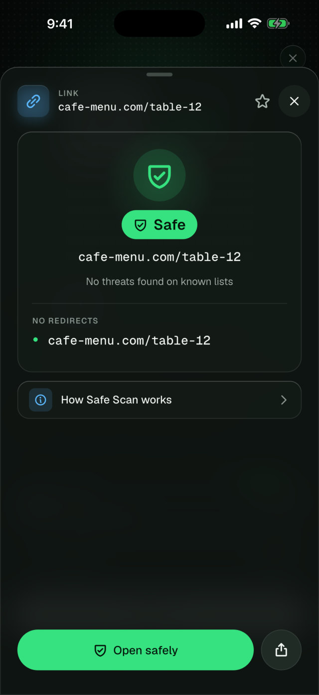
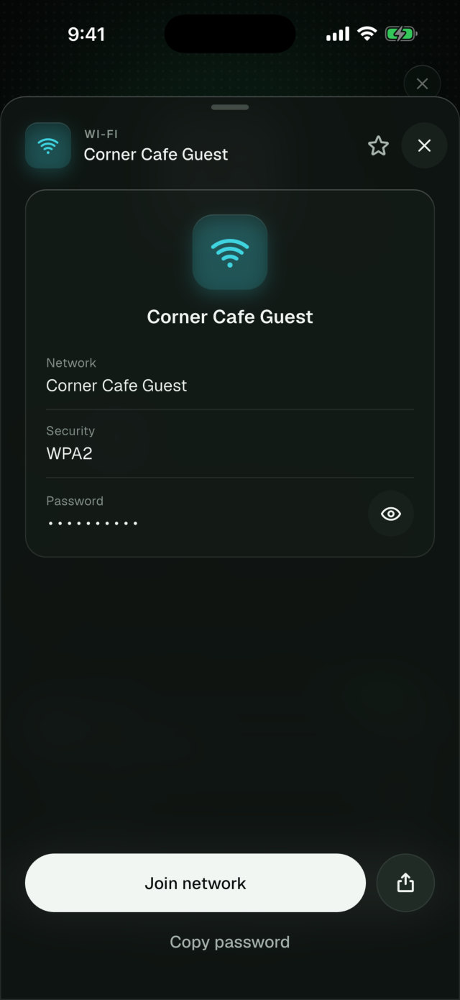
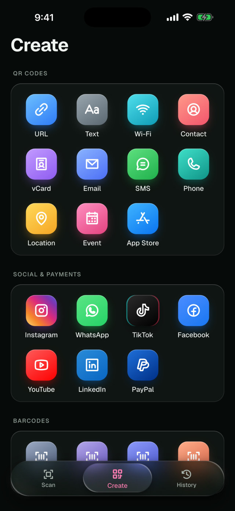
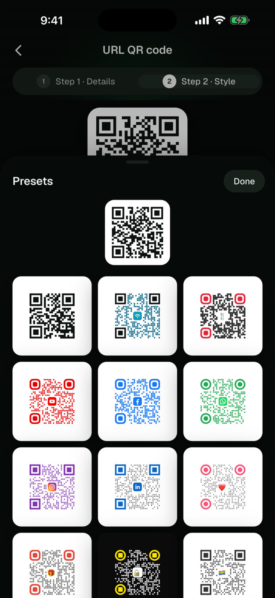
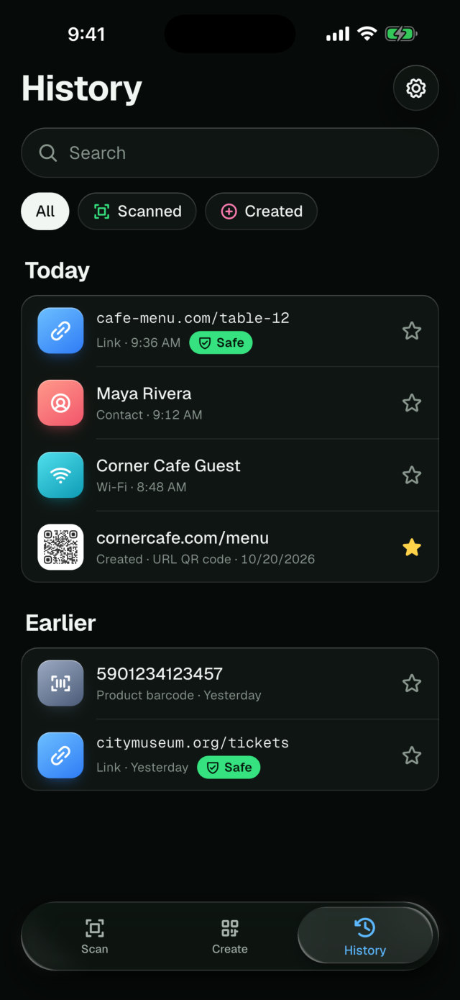

Tarama sonucu ekranları içerik tipine göre (bağlantı, Wi‑Fi, kişi) farklılaşıyor; güvenlik rozeti her zaman ilk bakışta okunuyor. Oluşturma tarafında hazır şablonlar ve stil stüdyosu, geçmiş ekranında ise filtrelenebilir bir arşiv var.




